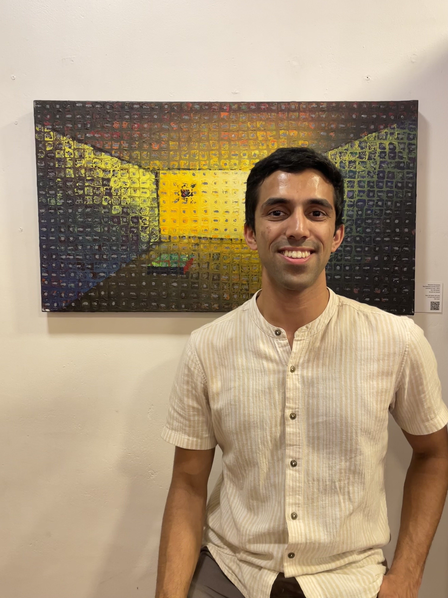

My story so far...
Passionate data and product enthusiast, with a keen interest in the intersection of innovation, analytics, and engineering.
Currently, I'm pursuing a Master's in Information Systems and have a deep passion for creating products from the ground up and utilizing data for informed decision-making. I'm highly motivated by solving complex problems.
My background...
My background includes valuable experience contributing to multiple high-growth startups with amazing founders. During my tenure as an Entrepreneur in Residence at Adaface, I expanded my skill set by working on writing content and search engine optimization, extending my expertise beyond the tech realm.
While at ReVx Energy, I played a key role as a software engineer in developing a web application that oversaw the management of an electric vehicle fleet. This experience strengthened my ability to solve complex problems through first-principles techniques.
Outside the tech world, you'll find me nose-deep in a good book, putting my thoughts into writing, or breaking a sweat in the gym.